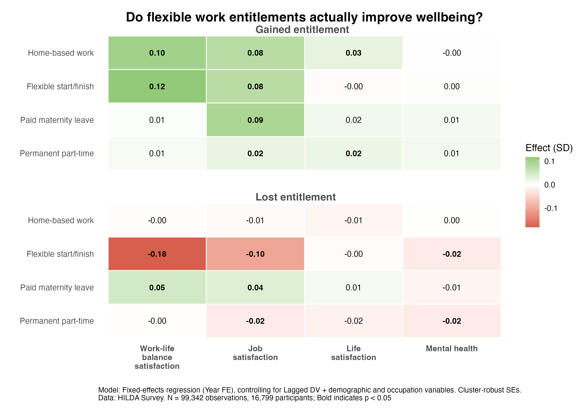

Do flexible work entitlements actually improve wellbeing?
There's a lot of debate about the value of flexible work arrangements right now, especially with return-to-office mandates making headlines. But what does the data say?
We used the HILDA Survey (99,342 observations from 16,799 participants) to examine what happens to work-life balance satisfaction, job satisfaction, life satisfaction, and mental health when workers either gain or lose a flexible work entitlement. The results are shown in the figure below. Each row represents a separate entitlement and each column represents an outcome. The top panel shows the effect of gaining the entitlement, the bottom panel shows the effect of losing it.

The main takeaway is that effects are quite small across the board, but here's what we found:
1) Gaining home-based work or flexible start/finish times was associated with small improvements in work-life balance satisfaction and job satisfaction.
2) Losing flexible start/finish times was associated with decreases in work-life balance satisfaction and job satisfaction. Interestingly, losing home-based work didn't have much impact on any outcome.
3) Paid maternity leave and permanent part-time entitlements showed even smaller effects. Gaining paid maternity leave was linked to a small increase in job satisfaction. And losing paid maternity leave was actually associated with very small but statistically detectable increases in work-life balance and job satisfaction (to be honest, I don't really have an explanation for this one).
4) None of the entitlements had a meaningful effect on life satisfaction or mental health.
On the one hand, even small population-level effects suggest that these entitlements do matter for some people. And it's plausible that the benefits are stronger for those who need them most, such as carers, parents of young children, or people managing health conditions. On the other hand, the fact that the effects are so small on average might also mean that simply having the entitlement on paper doesn't do much on its own. If your workplace offers flexible start and finish times but using that flexibility is frowned upon, or if taking it up means being passed over for opportunities, then the entitlement itself isn't worth much. It's possible that the culture around flexibility and the extent to which people feel supported in using it matters more than the policy itself.